Scratch
On this page
Recommendation: Use as a human writing surface; preserve upstream identity.
On a small screen, swipe horizontally to read every column.
| Snapshot | Assessment |
|---|---|
| Supplied location ID | scratch |
| Product family | Personal workspace |
| Implementation stage | Established desktop app source |
| Review date | 2026-09-26 |
| Local state | local changes present |
Vision and the problem it addresses
Offer a fast offline Markdown workspace where the user owns plain files and can invoke local AI editors when needed.
Who needs it: Writers and developers who prefer local notes, keyboard workflows and portable Markdown.
The moment it becomes useful: A person wants rich editing and search without a cloud account or a heavyweight team knowledge system.
How it works

This diagram summarizes the inspected design. It is not evidence of a successful end-to-end deployment. For a hands-on journey, use the onboarding guide.
How well it addresses the problem
- The product has a clear boundary: local files and a native Tauri shell with React/TipTap.
- The Rust AI execution path checks for the selected CLI, configures process arguments and streams through a spawned process.
- External file-change support makes it a plausible surface for agent-authored notes without replacing file ownership.
These are implementation strengths. Repeated use, customer demand and measured business outcomes remain separate questions.
What is missing or unproven
- A personal notes app has no organization-level permission or evidence model by default. Do not treat it as a company brain.
- Launching an AI CLI can expose selected content to the configured provider; offline storage alone does not mean every AI operation stays local.
- Platform builds, permissions, cancellation and concurrent edits need testing on each OS. No native build was run here.
- The upstream project is erictli/scratch; it is not a newly owned Spreix product simply because the checkout is local.
Smallest useful next step
Pilot a folder-based integration: approved exports from Cairn or Spreix become readable Markdown in Scratch. Keep round-trip ownership explicit and avoid auto-overwriting human edits.
Acceptance exercise: Use a disposable note, edit in rich/source mode, reopen the Markdown file, make an external edit and verify refresh, then invoke/cancel a harmless local AI request. Check diffs before saving.
This is a proposed validation exercise unless explicitly recorded as executed in VALIDATION.
Position in the portfolio
Related work: Cortex / compiled wiki, Cairn, Spreix Brain.
Read the overlap and integration decisions before merging features. Shared vocabulary does not guarantee shared IDs, permissions, storage or lifecycle semantics.
On a small screen, swipe horizontally to read every column.
| Reviewer judgment, 1–5 | Score |
|---|---|
| Effort to a credible narrow pilot | 2 |
| Potential breadth and recurrence of the need | 2 |
| Integration, operational and consequence exposure | 2 |
These are ordinal planning judgments, not completion percentages or a commercial valuation. Empty/archive projects should be parked rather than treated as active bets.
Evidence and next reading
Source references and snapshot limits · Developer / Claude onboarding · Portfolio synthesis